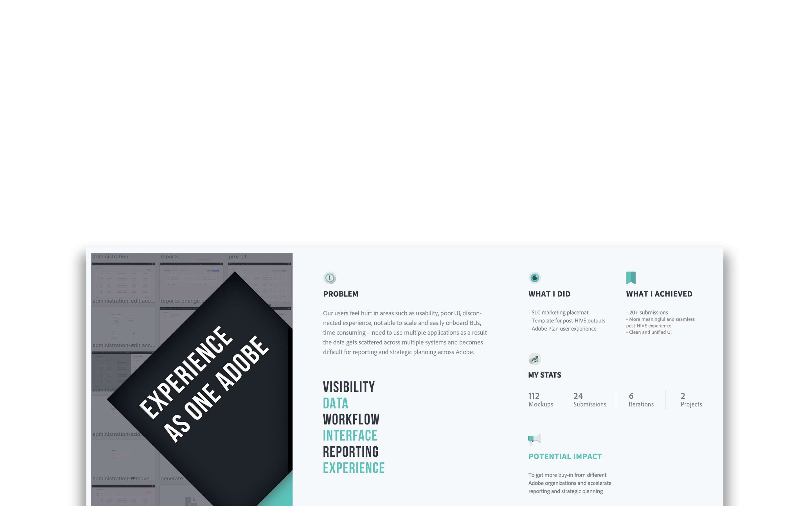
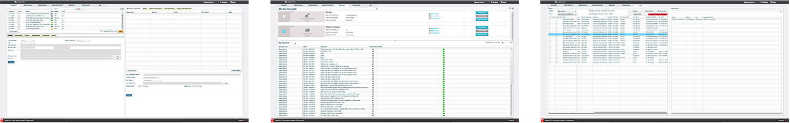
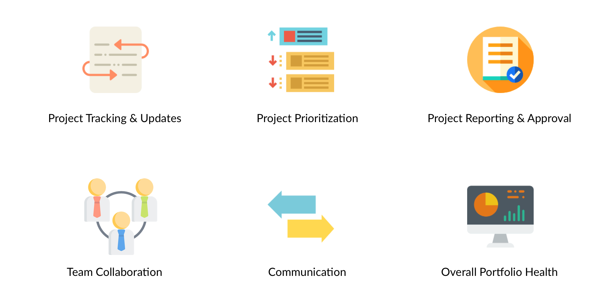

Experience as One Adobe - Accelerating Reporting & Strategic Planning
Project Type: User experience design
Roles: UX designer & researcher
Team: Sole designer on the team
Timeline: Summer 2017
In summer 2017, I interned at Adobe's headquater in San Jose, California as a UX Designer on the Business Operations & Planning team. I was working on the product design of Adobe PPM 2.0 (Project Portfolio Management) where everyone at Adobe can access
projects, align with corporate strategy, manage portfolio, and work as One Adobe.
In the 12 weeks, I worked with PMs, software engineers, and design mentors to create seamless and meaningful user experience to accelerate the reporting and strategic planning across Adobe.
The Adobe PPM (Project Portfolio Management) 1.0 was built several years ago upon several different applications. Adobe has evolved a lot since then, making most of the functionalities in Adobe PPM 1.0 redundant and outdated. The UI looks like from 1990s and the backend data fetching is slow. Different BUs are using different project management tools and people often need to jump back and forth to oversee projects.
Outdated UI of Adobe PPM 1.0
This is why Adobe PPM 2.0 is brought up by our team to accelerate the process and help Adobe employees manage projects and align with company strategy. Our team is also hoping that Adobe PPM 2.0 can become the 'single source of truth' at Adobe to help Adobe win in the marketplace.
The Adobe PPM 2.0 consists of an all new dashboard, project management, portfolio prioritization, reporting, and admistration functionalities.
Users can initiate a project in PPM or load an existing project elsewhere.
With the automated workflow, the system guides users to prioritize portfolio step by step before it is sent for approval.
With the new dashboard, managers can update a project regularly and send updates to others easily.
My team has conducted extensive competitive analysis and user research such as surveys and interviews before my internship. So my primary research task focused on synthesizing the research data and distilling key insights.
The primary users of Adobe PPM 2.0 will be the product managers, program managers, and vice presidents at Adobe. In order to illustrate our users and their goals, I created three primary personas and identified their needs by analyzing the previous user research such as surveys and interviews.
After analyzing surveys, interview data, and conducting heuristic evaluation on current application, I worked with the product manager and my team to identify the key issues of Adobe PPM 1.0:
Based on the personas, use cases, and key issues, my team and I identified the key features that are important in the new PPM (icon credit to Smashicons).
I also constructed the sitemap (information architecture) by analyzing the existing architecture and future vision. The new PPM will keep only the essential functions and be accessible on both web and mobile(not in scope).
As the only designer in the team, I spent 6 weeks in designing the interfaces and interactions of the new PPM. Adobe PPM 2.0 not only covers the primary functions of project & portfolio management, but also provides an intuitive dashboard which presents the key information and project changes to simplify the workflow.
To solve the pain point of burdensome workflow, I designed a highly-customizable dashboard where users can pin the most important information. The different pods on the dashboard also serves as shortcuts to most frequently used tabs.
The project list contains all the projects at Adobe, including closed projects. With so many projects going on, it is hard to satisfy the needs of different personas. Therefore, I explored the three HMW questions:
As a result, I designed an efficient and clear project list with searching, sorting and filtering functions.
In order to create forms that are easy to view and edit, I experimented with two different layouts - steplist and static editing. I also explored different types of buttons and used them to guide users complete their tasks.
For updating a project, I designed a steplist for managers so that managers will not miss any important information or fill in the wrong information.
In the UPL (Unified Priority List) tab, I designed a real-time roadmap to help users make decisions. I also designed two edit modes to help solve the pain points of burdensome prioritization process.
In the administration tab, I utilized the same table design patterns in the project tab such as 'breadcrums', 'drawers', and 'modal screen'.
To put all the functions and programs, I created a user workflow cycle engaging all three primary personas and bridged the gap between them by designing micro-interactions like useful feedback and smart notifications.
Finally, I refined the icon styles, unified margins/paddings, adjusted color palette to create hi-fidelity mockups.
{kind=link}
{kind=link}
{kind=link}
{kind=link}
{kind=link}
{kind=link}
{kind=link}
{kind=link}
{kind=link}
{kind=link}
{kind=link}
{kind=link}
{kind=link}
{kind=link}
{kind=link}
{kind=link}